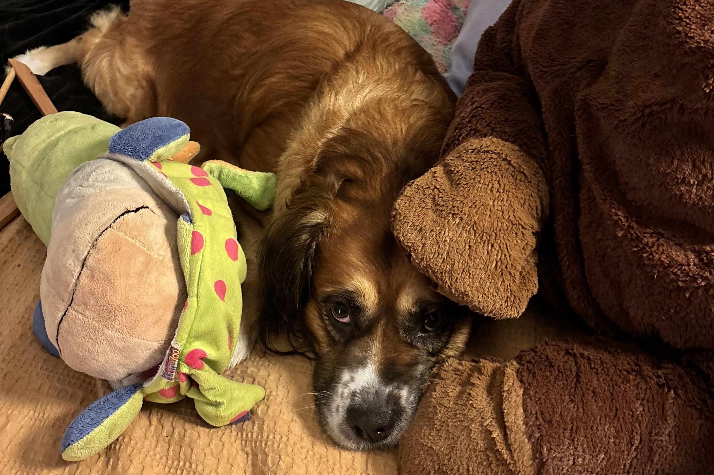

<!DOCTYPE html>
<html lang="en">

<head>
    <meta charset="UTF-8">
    <meta name="viewport" content="width=device-width, initial-scale=1.0">
    <title>Resume</title>
    <link rel="stylesheet" href="index4.css">
    <link
        href="https://fonts.googleapis.com/css2?family=Cormorant+Garamond:ital,wght@0,300;0,400;0,500;0,600;0,700;1,300;1,400;1,500;1,600;1,700&display=swap"
        rel="stylesheet">
</head>

<body>
    <div class="resume">
        <aside class="left-column">
            <section class="contact">
                <header>
                    <header>
                        <h1>Lockes A</h1>
                        
                    </header>
                </header>
                <h2>Contact</h2>
                <p>0419400392</p>
                <p>lockes.premium@gmail.com</p>
            </section>
            <section class="skills">
                <h2>Skills & Technology Literacy</h2>
                <ul>
                    <li>Computer & technology literacy</li>
                    <li>Client rotations & liaisons</li>
                    <li>Problem solving, negotiation & communications</li>
                </ul>
            </section>
            <section class="community">
                <h2>Volunteer Work & Community Engagement</h2>
                <ul>
                    <li>Retail Sales Assistant</li>
                    <li>Organizing meetings & calendar logistics</li>
                    <li>Security minutes</li>
                </ul>
            </section>
            <section class="references">
                <h2>References</h2>
                <ul>
                    <li>Available upon request</li>
                </ul>
            </section>
        </aside>
        <aside class="right-column">
            <h2>Profile</h2>
            <p>A young aspiring professional looking to expand my workplace knowledge & career opportunities, offering
                focus, drive, and enthusiasm to the work environment. With strong communication skills in one-on-one and
                group dynamics. Self-motivated with an eye for detail. A quick & curious learner with the ability to
                adapt to most environments & schedules. Having initiative and confidence when problem-solving in both
                independent and collaborative roles.</p>

            <h2>Work Experience</h2>
            <h3>Collections Officer</h3>
            <p>2023 - Present</p>
            <ul>
                <li>Managed over 200 accounts</li>
                <li>Developed payment plans for clients and businesses</li>
                <li>Handled client inquiries and financial decisions</li>
            </ul>

            <h3>Pharmacy Assistant</h3>
            <p>2021 - 2022</p>
            <ul>
                <li>Accountable for product inventory and sales</li>
                <li>Ensured all merchandising for specified departments</li>
            </ul>

            <h3>Telecommunications & Portable Audio Salesperson</h3>
            <p>2015 - 2020</p>
            <ul>
                <li>Coordinated sales by displaying product knowledge</li>
                <li>Implemented and updated merchandising requirements</li>
            </ul>
    </div>
    </aside>
</body>
<footer>
    wishful thinking
</footer>

</aside>